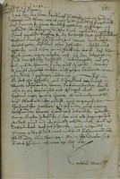
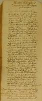
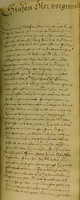
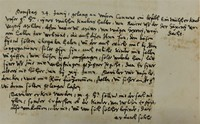
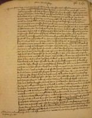

Static archive of a former Omeka site (snapshot 2026-11-24). Search and interactive features are not available.
Skip to main content
Data literacy (Frühling 2020)
Start
Forumsdiskussionen über Moderation
RETURNING TO DOFUS
RIGHTS TO PLACE PRISMES
HALLO MODS!
HANDEL-SACHEN WEG
STOP LE BENEVOLAT
MUTE INCOMPRÉHENSIBLE
Reflexion
Drucke aus Japan
Japanische unbegrenzte Flächenmuster
Bailei Skizzenbuch: Vogelbilder
Reflexion
Kinderhexenprozesse im Kanton Bern und in der Waadt 1441-1678
Jaggatlin
Wälscher Knabe
Stäffan Öler
Michel Schnÿder
Frantz N.
Claude Clot
Jung Knab
Reflexion
data-literacy
Sammlung
Titel
data-literacy
Objekte
von 1
1–6 von 6
Erweiterte Suche
Titel
Identifikator
Erstellt
Date (numeric:interval)
Date (numeric:timestamp)
Geburtsdatum (numeric:timestamp)
Sterbedatum (numeric:timestamp)
Aufsteigend
Absteigend
Sortieren
Frantz N.
Verfahren gegen Frantz N.

Michel Schnÿder
Prozess gegen Michel Schnÿder

Stäffan Öler
Prozess gegen Stäffan Öler

Test Forum Dofus 1
Testing posting a forum post
Wälscher Knabe
Prozess gegen den Wälschen Knaben

Jaggatlin
Prozess gegen Uelli Zaler

von 1
1–6 von 6